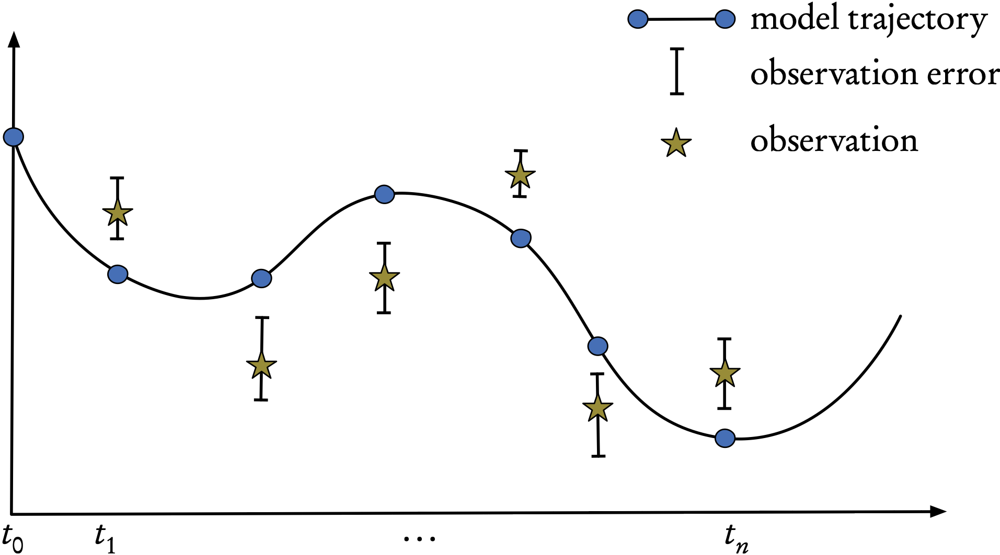
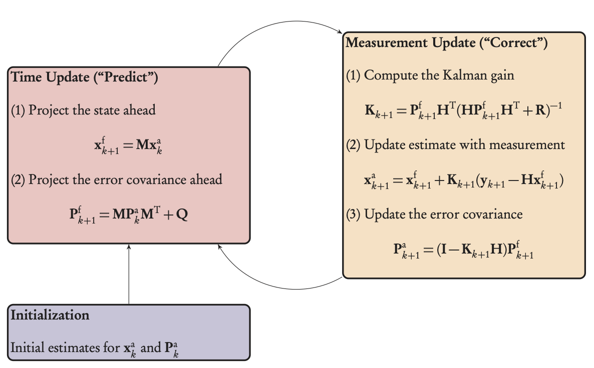
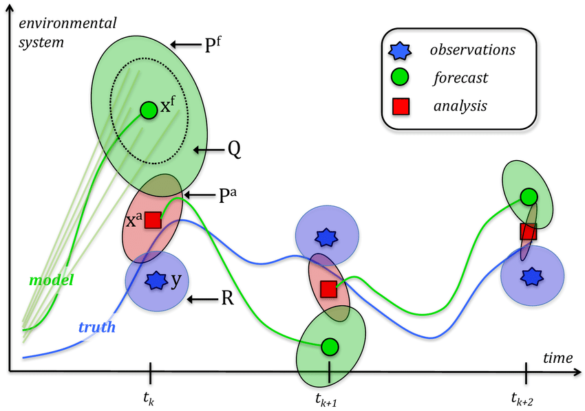
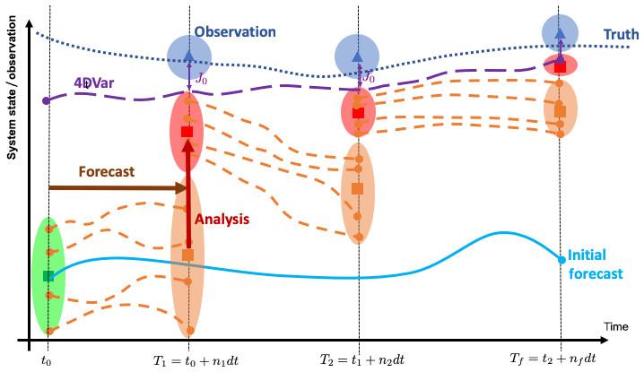
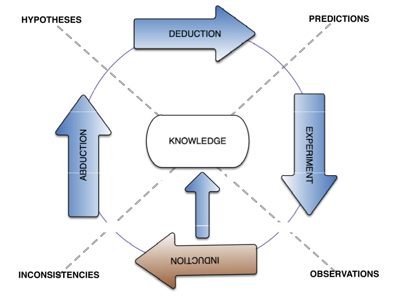

Data Assimilation
statistical data assimilation
2024-01-31
Statistical DA: introduction
Now we will generalize the variational approach to deal with errors and noise in
the models,
the observations and
the initial conditions.
The variational results could of course be derived as a special case of statistical DA, in the limit where the noise disappears.
Even the statistical results can be derived in a very general way, using SDEs and/or Bayesian analysis, and then specialized to the various Kalman-type filters that we will study here.
Practical inverse problems and data assimilation problems involve measured data.
- These data are inexact and are mixed with random noise.
- Only statistical models can provide rigorous, effective means for dealing with this measurement error.
We want to estimate a scalar quantity, say the temperature or the ozone level, at a fixed point in space.
Suppose we have:
a model forecast, \(x^{\mathrm{b}}\) (background, or a priori value)
and a measured value, \(x^{\mathrm{obs}}\) (observation).
The simplest possible approach is to try a linear combination of the two, \[x^{\mathrm{a}}=x^{\mathrm{b}}+w(x^{\mathrm{obs}}-x^{\mathrm{b}}),\] where \(x^{\mathrm{a}}\) denotes the analysisthat we seek and \(0\le w\le1\) is a weight factor. We subtract the (always unknown) true state \(x^{\mathrm{t}}\) from both sides, \[x^{\mathrm{a}}-x^{\mathrm{t}}=x^{\mathrm{b}}-x^{\mathrm{t}}+w(x^{\mathrm{obs}}-x^{\mathrm{t}}-x^{\mathrm{b}}+x^{\mathrm{t}})\]
and defining the three errors (analysis, background, observation) as \[e^{\mathrm{a}}=x^{\mathrm{a}}-x^{\mathrm{t}},\quad\mathrm{e^{b}}=x^{\mathrm{b}}-x^{\mathrm{t}},\quad e^{\mathrm{obs}}=x^{\mathrm{obs}}-x^{\mathrm{t}},\] we obtain \[e^{\mathrm{a}}=e^{\mathrm{b}}+w(e^{\mathrm{obs}}-e^{\mathrm{b}})=we^{\mathrm{obs}}+(1-w)e^{\mathrm{b}}.\] If we have many realizations, we can take an ensemble average, or expectation, denoted by \(\left\langle \cdot\right\rangle ,\) \[\left\langle e^{\mathrm{a}}\right\rangle =\left\langle e^{\mathrm{b}}\right\rangle +w(\left\langle e^{\mathrm{obs}}\right\rangle -\left\langle e^{\mathrm{b}}\right\rangle ).\] Now if these errors are centred (have zero mean, or the estimates of the true state are unbiased), then \[\left\langle e^{\mathrm{a}}\right\rangle =0\] also. So we must look at the variance and demand that it be as small as possible. The variance is defined, using the above notation, as
\[\sigma^{2}=\left\langle \left(e-\left\langle e\right\rangle \right)^{2}\right\rangle .\] Now, taking variances of the error equation, and using the zero-mean property, we obtain \[\sigma_{\mathrm{a}}^{2}=\sigma_{\mathrm{b}}^{2}+w^{2}\left\langle \left(e^{\mathrm{obs}}-e^{\mathrm{b}}\right)^{2}\right\rangle +2w\left\langle e^{\mathrm{b}}\left(e^{\mathrm{obs}}-e^{\mathrm{b}}\right)\right\rangle .\] This reduces to \[\sigma_{\mathrm{a}}^{2}=\sigma_{\mathrm{b}}^{2}+w^{2}\left(\sigma_{\mathrm{o}}^{2}+\sigma_{\mathrm{b}}^{2}\right)-2w\sigma_{\mathrm{b}}^{2}\] if \(e^{\mathrm{o}}\) and \(e^{\mathrm{b}}\) are uncorrelated.
Now, to compute a minimum, take the derivative with respect to \(w\) and equate to zero, to obtain \[0=2w\left(\sigma_{\mathrm{obs}}^{2}+\sigma_{\mathrm{b}}^{2}\right)-2\sigma_{\mathrm{b}}^{2},\]
where we have ignored all cross terms (errors are assumed independent). Finally, solving this last equation, we can write the optimal weight, \[w_{*}=\frac{\sigma_{\mathrm{b}}^{2}}{\sigma_{\mathrm{obs}}^{2}+\sigma_{\mathrm{b}}^{2}}=\frac{1}{1+\sigma_{\mathrm{o}}^{2}/\sigma_{\mathrm{b}}^{2}}\] which depends on the ratio of the background and the observation errors. Clearly \(0\le w_{*}\le1\) and
if the observation is perfect, \(\sigma_{\mathrm{obs}}^{2}=0\) and thus \(w_{*}=1,\) the maximum weight;
if the background is perfect, \(\sigma_{\mathrm{b}}^{2}=0\) and \(w_{*}=0,\) so the observation will not be taken into account.
We can now rewrite the analysis error variance as,
\[\begin{aligned} \sigma_{\mathrm{a}}^{2} & =w_{*}^{2}\sigma_{\mathrm{obs}}^{2}+(1-w_{*})^{2}\sigma_{\mathrm{b}}^{2}\\ & =\frac{\sigma_{\mathrm{b}}^{2}\sigma_{\mathrm{obs}}^{2}}{\sigma_{\mathrm{obs}}^{2}+\sigma_{\mathrm{b}}^{2}}\\ & =(1-w_{*})\sigma_{\mathrm{b}}^{2}\\ & =\frac{1}{\sigma_{\mathrm{obs}}^{-2}+\sigma_{\mathrm{b}}^{-2}}, \end{aligned}\] where we suppose that \(\sigma_{\mathrm{b}}^{2},\;\sigma_{\mathrm{o}}^{2}>0.\) In other words, \[\frac{1}{\sigma_{\mathrm{a}}^{2}}=\frac{1}{\sigma_{\mathrm{o}}^{2}}+\frac{1}{\sigma_{\mathrm{b}}^{2}}.\] This is a very fundamental result, implying that the overall precision, \(\tau=1/\sigma^{2},\) (reciprocal of the variance) is the sum of the background and measurement precisions. Finally, the analysis equation becomes
\[x^{\mathrm{a}}=x^{\mathrm{b}}+\frac{1}{1+\alpha}(x^{\mathrm{obs}}-x^{\mathrm{b}}),\] where \(\alpha=\sigma_{\mathrm{obs}}^{2}/\sigma_{\mathrm{b}}^{2}.\) This is called the BLUE- Best Linear Unbiased Estimator - because it gives an unbiased, optimal weighting for a linear combination of two independent measurements.
Statistical DA: 3 special cases and conclusions
We can isolate three special cases:
if the observation is very accurate, \(\sigma_{\mathrm{obs}}^{2}\ll\sigma_{\mathrm{b}}^{2},\) \(\alpha\ll1\) and thus \(x^{\mathrm{a}}\approx x^{\mathrm{obs}}\)
if the background is accurate, \(\alpha\gg1\) and \(x^{\mathrm{a}}\approx x^{\mathrm{b}}\)
and finally, if observation and background varaiances are approximately equal, \(\alpha\approx1\) and \(x^{\mathrm{a}}\) is the arithmetic average of \(x^{\mathrm{b}}\) and \(x^{\mathrm{obs}}.\)
Conclusion: this simple, linear model does indeed capture the full range of possible solutions in a statistically rigorous manner, thus providing us with an “enriched” solution when compared with a non-probabilistic, scalar response such as the arithmetic average of observation and background, which would correspond to only the last of the above three special cases.
KALMAN FILTERS
Kalman Filters - background and history
DA is concerned with dynamic systems, where (noisy) observations are acquired over time.
Question: Is there some statistically optimal way to combine the dynamic model and the observations?
One answer is provided by Kalman filters
They are linear models for state estimation of noisy dynamic systems.
They have been the de facto standard in many robotics and tracking/prediction applications because they are well-suited for systems where there is uncertainty about an observable dynamic process.
They are also the basis of many data assimilation systems.
They use a paradigm of “observe, predict, correct” to extract information from a noisy signal.
The Kalman filter was invented1 in 1960 by R. E. Kálmán to solve this sort of problem in a mathematically optimal way.
Its first use was on the Apollo missions to the moon, and since then it has been used in an enormous variety of domains.
There are Kalman filters in aircraft and autonomous vehicles, on submarines, and, in cruise missiles.
Wall Street uses them to track the market.
They are used in robots, in IoT (Internet of Things) sensors, and in laboratory instruments.
Chemical plants use them to control and monitor reactions.
They are used to perform medical imaging and to remove noise from cardiac signals.
Weather forecasting is based on Kalman filters.
They can effectively be used for modeling in epidemiology.
In summary, if it involves a sensor and/or time-series data, a Kalman filter or a close relative of the Kalman filter is usually involved.
Kalman Filters — formulation
Consider a dynamical system that evolves in time and we would like toestimatea series of true states, \(\mathbf{x}^{\mathrm{t}}_{k}\) (a sequence of random vectors) where discrete time is indexed by the letter \(k.\)
These times are those when the observations or measurements are taken, as shown in the Figure.
Figure 1: Sequential assimilation: a computed model trajectory, observations, and their error bars.
The assimilation starts with an unconstrained model trajectory from \(t_{0},t_{1},\ldots,t_{k-1},t_{k},\ldots,t_{n}\) and aims to provide anoptimal fitto the available observations/measurements given their uncertainties (error bars).
For example, in current, synoptic scale weather forecasts, \(t_{k}-t_{k-1}=6\) hours and is less for the convective scale.
In robotics, or autonomous vehicles, the time intervals are of the order of the instrumental frequency, which can be a few milliseconds.
Kalman Filters - stochastic model
We seek to estimate the state \(\mathbf{x}\in\mathbb{R}^{n}\) of a discrete-time dynamic process that is governed by the linear stochastic difference equation \[\mathbf{x}_{k+1}=\mathbf{M}_{k+1}\mathbf{x}_{k}+\mathbf{w}_{k} \tag{1}\]
with a measurement/observation \(\mathbf{y}\in\mathbb{R}^{m},\) \[\mathbf{y}_{k}=\mathbf{H}_{k}\mathbf{x}_{k}+\mathbf{v}_{k}. \tag{2}\]
Note
\(\mathbf{M}_{k+1}\) and \(\mathbf{H}_{k}\) are considered linear, here.
The random vectors, \(\mathbf{w}_{k}\) and \(\mathbf{v}_{k},\) represent the process/modeling and measurement/observation errors respectively.
They are assumed to be independent, white noise processes with Gaussian/normal probability distributions, \[\begin{aligned} \mathbf{w}_{k} & \sim & \mathcal{N}(0,\mathbf{Q}_{k}),\\ \mathbf{v}_{k} & \sim & \mathcal{N}(0,\mathbf{R}_{k}), \end{aligned}\] where \(\mathbf{Q}\) and \(\mathbf{R}\) are the covariance matrices (supposed known) of the modeling and observation errors respectively.
All these assumptions about unbiased and uncorrelated errors (in time and between each other) are not limiting, since extensions of the standard Kalman filter can be developed should any of these not be valid see next lecture.
We note that, for a broader mathematical view on the above system, we could formulate all of statistical DA in terms of stochastic differential equations (SDEs).
- Then the theory of Itô provides a detailed solution of the problem of optimal filtering as well as rigorous existence and uniqueness results… see (Law, Stuart, and Zygalakis 2015; Särkkä and Svensson 2023).
Kalman Filters — sequential assimilation scheme
The typical assimilation scheme is made up of two major steps:
a prediction/forecast step, and
a correction/analysis step.
Figure 2: Sequential assimilation scheme for the Kalman filter. The x-axis denotes time, the y-axis denotes the values of the state and observations vectors.
At time \(t_{k}\) we have the result of a previous forecast, \(\mathbf{x}^{\mathrm{f}}_{k},\) (the analogue of the background state \(\mathbf{x}^{\mathrm{b}}_{k}\)) and the result of an ensemble of observations in \(\mathbf{y}_{k}.\)
Based on these two vectors, we perform an analysis that produces \(\mathbf{x}^{\mathrm{a}}_{k}.\)
We then use the evolution model to obtain a prediction of the state at time \(t_{k+1}.\)
The result of the forecast is denoted \(\mathbf{x}^{\mathrm{f}}_{k+1},\) and becomes the background, or initial guess, for the next time-step see Figure 2).
The Kalman filter problem can be resumed as follows:
given a prior/background estimate \(\mathbf{x}^{\mathrm{f}}\) of the system state at time \(t_{k},\)
what is the best update/analysis \(\mathbf{x}^{\mathrm{a}}_{k}\) based on the currently available measurements \(\mathbf{y}_{k}?\)
Kalman Filters — the filter
The goal of the Kalman filter is:
to compute an optimal a posteriori estimate \(\mathbf{x}_{k}^{\mathrm{a}}\)
that is a linear combination of an a priori estimate \(\mathbf{x}_{k}^{\mathrm{f}}\) and a weighted difference between the actual measurement \(\mathbf{y}_{k}\) and the measurement prediction \(\mathbf{H}_{k}\mathbf{x}^{\mathrm{f}}_{k}.\)
This is none other than the BLUE that we have seen above.
The filter is thus of the linear, recursive form \[\mathbf{x}_{k}^{\mathrm{a}}=\mathbf{x}_{k}^{\mathrm{f}}+\mathbf{K}_{k}\left(\mathbf{y}_{k}-\mathbf{H}_{k}\mathbf{x}_{k}^{\mathrm{f}}\right). \tag{3}\]
The difference \(\mathbf{d}_{k}=\mathbf{y}_{k}-\mathbf{H}_{k}\mathbf{x}_{k}^{\mathrm{f}}\) is called the innovation and reflects the discrepancy between the actual and the predicted measurements at time \(t_{k}.\)
Note
Note that, for generality, the matrices are shown with a time-dependence. When this is not the case, the subscripts \(k\) can be dropped.
The Kalman gain matrix, \(\mathbf{K},\) minimizes the a posteriori error covariance Equation 4.
- We define forecast (a priori) and analysis (a posteriori) estimate errors as \[\begin{aligned} \mathbf{e}_{k}^{\mathrm{f}} & = & \mathbf{x}_{k}^{\mathrm{f}}-\mathbf{x}_{k}^{\mathrm{t}},\\ \mathbf{e}_{k}^{\mathrm{a}} & = & \mathbf{x}_{k}^{\mathrm{a}}-\mathbf{x}_{k}^{\mathrm{t}}, \end{aligned}\] where \(\mathbf{x}_{k}^{\mathrm{t}}\) is the (unknown) true state. Respective error covariance matrices are \[\begin{aligned} \mathbf{P}_{k}^{\mathrm{f}} & = & \mathop{\mathrm{Cov}}(\mathbf{e}_{k}^{\mathrm{f}})=\mathrm{E}\left[\mathbf{e}_{k}^{\mathrm{f}}(\mathbf{e}_{k}^{\mathrm{f}})^{\mathrm{T}}\right],\nonumber \\ \mathbf{P}_{k}^{\mathrm{a}} & = & \mathop{\mathrm{Cov}}(\mathbf{e}_{k}^{\mathrm{a}})=\mathrm{E}\left[\mathbf{e}_{k}^{\mathrm{a}}(\mathbf{e}_{k}^{\mathrm{a}})^{\mathrm{T}}\right]. \end{aligned} \tag{4}\]
Optimal gain requires a careful derivation, that is beyond our scope here (see (Asch 2022; Asch, Bocquet, and Nodet 2016)).
Kalman Filters — optimal gain
The Kalman gainmatrix, \(\mathbf{K},\) is chosen to minimize the a posteriori error covariance Equation 4.
The resulting \(\mathbf{K}\) that minimizes Equation 4 is given by \[\mathbf{K}_{k}=\mathbf{P}_{k}^{\mathrm{f}}\mathbf{H}_{k}^{\mathrm{T}}\left(\mathbf{H}_{k}\mathbf{P}_{k}^{\mathrm{f}}\mathbf{H}_{k}^{\mathrm{T}}+\mathbf{R}_{k}\right)^{-1} \tag{5}\] where we remark that \(\mathbf{H}\mathbf{P}_{k}^{\mathrm{f}}\mathbf{H}_{k}^{\mathrm{T}}+\mathbf{R}_{k}=\mathrm{E}\left[\mathbf{d}_{k}\mathbf{d}_{k}^{\mathrm{T}}\right]\) is the covariance of the innovation.
Looking at this expression for \(\mathbf{K}_{k},\) we see:
when the measurement error covariance\(\mathbf{R}_{k}\) approaches zero, the gain \(\mathbf{K}_{k}\) weights the innovation more heavily, since \[\lim_{\mathbf{R}\rightarrow0}\mathbf{K}_{k}=\mathbf{H}_{k}^{-1}.\]
On the other hand, as the a priori error estimate covariance \(\mathbf{P}_{k}^{\mathrm{f}}\) approaches zero,
the gain \(\mathbf{K}_{k}\) weights the innovation less heavily, and \[\lim_{\mathbf{P}_{k}^{\mathrm{f}}\rightarrow0}\mathbf{K}_{k}=0.\]
Another way of thinking about the weighting of \(\mathbf{K}\) is that as the measurement error covariance \(\mathbf{R}\) approaches zero, the actual measurement \(\mathbf{y}_{k}\) is “trusted” more and more, while the predicted measurement \(\mathbf{H}_{k}\mathbf{x}_{k}^{\mathrm{f}}\) is trusted less and less.
On the other hand, as the a priori error estimate covariance \(\mathbf{P}_{k}^{\mathrm{f}}\) approaches zero, the actual measurement \(\mathbf{y}_{k}\) is trusted less and less, while the predicted measurement \(\mathbf{H}_{k}\mathbf{x}_{k}^{\mathrm{f}}\) is “trusted” more and more this will be illustrated in the computational example below.
Kalman Filters — 2-step procedure
Figure 3: Kalman filter loop, showing the two phases, predict and correct, preceded by an initialization step.
The predictor-corrector loop is illustrated in Figure 3 and can be transposed, as is, into an operational algorithm.
KF — predictor/forecast step
Start from a previous analyzed state1, \(\mathbf{x}_{k}^{\mathrm{a}},\) or from the initial state if \(k=0,\) characterized by the Gaussian pdf \(p(\mathbf{x}_{k}^{\mathrm{a}}\mid\mathbf{y}_{1:k}^{\mathrm{o}})\) of mean \(\mathbf{x}_{k}^{\mathrm{a}}\) and covariance matrix \(\mathbf{P}_{k}^{a}.\)
An estimate of \(\mathbf{x}_{k+1}^{\mathrm{t}}\) is given by the dynamical model which defines the forecast as \[\begin{gather} \mathbf{x}_{k+1}^{\mathrm{f}} & = & \mathbf{M}_{k+1}\mathbf{x}_{k}^{\mathrm{a}},\label{eq:fstate}\\ \mathbf{P}_{k+1}^{\mathrm{f}} & = & \mathbf{M}_{k+1}\mathbf{P}_{k}^{\mathrm{a}}\mathbf{M}_{k+1}^{\mathrm{T}}+\mathbf{Q}_{k+1}, \end{gather} \tag{6}\] where the expression for \(\mathbf{P}^{\mathrm{f}}_{k+1}\) is obtained from the dynamics equation and the definition of the model noise covariance, \(\mathbf{Q}.\)
KF - corrector/analysis step
At time \(t_{k+1},\) the pdf \(p(\mathbf{x}_{k+1}^{\mathrm{f}}\mid\mathbf{y}_{1:k}^{\mathrm{o}})\) is known, thanks to the mean \(\mathbf{x}_{k+1}^{\mathrm{f}}\) and covariance matrix \(\mathbf{P}_{k+1}^{\mathrm{f}}\) just calculated, as well as the assumption of a Gaussian distribution.
The analysis step then consists of correcting this pdf using the observation available at time \(t_{k+1}\) in order to compute \(p(\mathbf{x}_{k+1}^{\mathrm{a}}\mid\mathbf{y}_{1:k+1}^{\mathrm{o}}).\) This comes from the BLUE in the dynamical context and gives
\[\begin{gather} \mathbf{K}_{k+1} & = & \mathbf{P}_{k+1}^{\mathrm{f}}\mathbf{H}^{\mathrm{T}}\left(\mathbf{H}\mathbf{P}_{k+1}^{\mathrm{f}}\mathbf{H}^{\mathrm{T}}+\mathbf{R}_{k+1}\right)^{-1},\label{eq:aK}\\ \mathbf{x}_{k+1}^{\mathrm{a}} & = & \mathbf{x}_{k+1}^{\mathrm{f}}+\mathbf{K}_{k+1}\left(\mathbf{y}_{k+1}-\mathbf{H}\mathbf{x}_{k+1}^{\mathrm{f}}\right),\label{eq:astate}\\ \mathbf{P}_{k+1}^{\mathrm{a}} & = & \left(\mathbf{I}-\mathbf{K}_{k+1}\mathbf{H}\right)\mathbf{P}_{k+1}^{\mathrm{f}}.\label{eq:acov} \end{gather} \tag{7}\]
Overall Picture

Principle: as we move forward in time, the uncertainty of the analysis is reduced, and the forecast is improved.
KF — Relation Between Bayes and BLUE
If we know that the a priori and the observation data are both Gaussian, Bayes’ rule can be readily applied to compute the a posteriori pdf.
- The a posteriori pdf is then Gaussian, and its parameters are given by the BLUE equations.
Hence with Gaussian pdfs and a linear observation operator, there is no need to use Bayes’ rule.
The BLUE equations can be used instead to compute the parameters of the resulting pdf.
Since the BLUE provides the same result as Bayes’ rule, it is the best estimator of all.
In addition one can recognize the 3D-Var cost function.
- By optimizing this cost function, 3D-Var finds the MAP (maximum a posteriori) estimate of the Gaussian pdf, which is equivalent to the MV (minimum variance) estimate found by the BLUE.
ENSEMBLE KALMAN FILTERS
Ensemble Kalman Filter — EnKF
The ensemble Kalman filter (EnKF) is an elegant approach that avoids
the steps of linearization in the classical Kalman Filter,
and the need for adjoints in the variational approach.
It is still based on a Kalman filter, but an ensemble of realizations is used to compute an estimate of the population mean and variance, thus avoiding the need to compute inverses of potentially large matrices to obtain the posterior covariance, as was the case above in equations for \(\mathbf{K}_{k+1}\) and \(\mathbf{P}_{k+1}^a\) (Equation 7).
The EnKF and its variants have been successfully developed and implemented in meteorology and oceanography, including in operational weather forecasting systems. Because the method is simple to implement, it has been widely used in these fields.
But it has spread out to other geoscience disciplines and beyond. For instance, to name a few domains, it has been applied in greenhouse gas inverse modeling, air quality forecasting, extra-terrestrial atmosphere forecasting , detection and attribution in climate sciences, geomagnetism re-analysis , and ice-sheet parameter estimation and forecasting. It has also been used in petroleum reservoir estimation, in adaptive optics for extra large telescopes, and highway traffic estimation.
More recently, the idea was proposed to exploit the EnKF as a universal approach for all inverse problems. The term EKI, Ensemble Kalman Inversion, is used to describe this approach.
Principle of the EnKF
The EnKF was originally proposed by G. Evensen in 1994 and amended in Evensen et al. (2009).
Definition 1 The ensemble Kalman filter (EnKF) is a Kalman filter that uses an ensemble of realizations to compute estimates of the population mean and covariance.
Since it is based on Gaussian statistics (mean and covariance) it does not solve the Bayesian filtering problem in the limit of a large number of particles, as opposed to the more general particle filterseeAdvanced Course. Nonetheless, it turns out to be an excellent approximate algorithm for the filtering problem.
As in the particle filter, the EnKF is based on the concept of particles, a collection of state vectors, which are called the members of the ensemble.
- Rather than propagating huge covariance matrices, the errors are emulated by scattered particles, a collection of state vectors whose variability is meant to be representative of the uncertainty of the system’s state resulting from the forecaster’s ignorance.
Just like the particle filter, the members are propagated by the nonlinear model, without any linearization. Not only does this avoid the derivation of the tangent linear model, but it also circumvents the approximate linearization.
Finally, as opposed to the particle filter, the EnKF does not irremediably suffer from the curse of dimensionality.
To sum up, here are the important remarks:
the EnKF avoids the linearization step of the KF;
the EnKF avoids the inversion of potentially large matrices;
the EnKF does not require any adjoint, as in variational assimilation;
the EnKF has been applied to a vast number of real-world problems.
EnKF — the Three Steps
Initialization: generate an ensemble of \(m\) random states \(\left\{ \mathbf{x}_{i,0}^{\mathrm{f}}\right\} _{i=1,\ldots,m}\) at time \(t=0.\)
Forecast: compute the prediction for each member of the ensemble.
Analysis: correct the prediction in light of the observations.
Please see the Algorithm (alg-EnKF?) below for details of each step.
Note
Propagation can equivalently be performed either at the end of the analysis step or at the beginning of the forecast step.
The Kalman gain is not computed directly, but estimated from the ensemble statistics.
With the important exception of the Kalman gain computation, all operations on the ensemble members are independent. As a result, parallelization is straightforward.
This is one of the main reasons for the success/popularity of the EnKF.
EnKF — Analysis Step
The EnKF seeks to mimic the analysis step of the Kalman filter but with an ensemble of limited size in place of the unwieldy covariance matrices.
The goal is to perform for each member of the ensemble an analysis of the form, \[\mathbf{x}_{i}^{{\rm a}}=\mathbf{x}_{i}^{{\rm f}}+\mathbf{K}\left[\mathbf{y}_{i}-\mathcal{H}(\mathbf{x}^{\mathrm{f}}_{i})\right], \tag{8}\] where
\(i=1,\ldots,m\) is the member index in the ensemble,
\(\mathbf{x}^{\mathrm{f}}_{i}\) is the forecast state vector \(i\), which represents a background state or prior at the analysis time.
To mimic the Kalman filter, \(\mathbf{K}\) must be identified with the Kalman gain \[\mathbf{K}=\mathbf{P}^{\mathrm{f}}\mathbf{H}^{\mathrm{T}}{\mathbf{H}\mathbf{P}^{\mathrm{f}}\mathbf{H}^{\mathrm{T}}+\mathbf{R}}^{-1},\label{eq:kalman-gain}\] that we wish to estimate from the ensemble statistics.
First, we compute the forecast error covariance matrix as a sum over the ensemble, \[\mathbf{P}^{\mathrm{f}}=\frac{1}{m-1}\sum_{i=1}^{m}\left({\mathbf{x}_{i}^{{\rm f}}-\overline{\mathbf{x}}^{{\rm f}}}\right)\left({\mathbf{x}_{i}^{{\rm f}}-\overline{\mathbf{x}}^{{\rm f}}}\right)^{\mathrm{T}},\] with \(\overline{\mathbf{x}}=\frac{1}{m}\sum_{i=1}^{m}\mathbf{x}_{i}^{{\rm f}}.\)
The forecast error covariance matrix can be factorized into \[\mathbf{P}^{\mathrm{f}}=\mathbf{X}_{\mathrm{f}}\mathbf{X}_{\mathrm{f}}^{\mathrm{T}},\] where \(\mathbf{X}_{\mathrm{f}}\) is a \(n\times m\) matrix whose columns are the normalized anomalies or normalized perturbations , i.e. for \(i=1,\ldots,m\) \[\left[\mathbf{X}_{\mathrm{f}}\right]_{i}=\frac{\mathbf{x}_{i}^{{\rm f}}-\overline{\mathbf{x}}^{{\rm f}}}{\sqrt{m-1}}.\]
We can now obtain from Equation 8 a posterior ensemble \(\left\{ \mathbf{x}_{i}^{{\rm a}}\right\} _{i=1,\ldots,m}\) from which we can compute the posterior statistics.
Hence, the posterior state and an ensemble of posterior perturbations can be estimated from \[\overline{\mathbf{x}}^{{\rm a}}=\frac{1}{m}\sum_{i=1}^{m}\mathbf{x}^{\mathrm{a}}_{i}\,,\quad\left[\mathbf{X}_{\mathrm{a}}\right]_{i}=\frac{\mathbf{x}_{i}^{{\rm a}}-\overline{\mathbf{x}}^{{\rm a}}}{\sqrt{m-1}}.\]
Since \(\mathbf{y}_{i}\equiv\mathbf{y}\) was assumed, the normalized anomalies, \(\mathbf{X}_{i}^{{\rm a}}\equiv\left[\mathbf{X}_{\mathrm{a}}\right]_{i}\), i.e. the normalized deviations of the ensemble members from the mean are obtained from Equation 8 minus the mean update, \[\mathbf{X}_{i}^{{\rm a}}=\mathbf{X}_{i}^{{\rm f}}+\mathbf{K}\left(\mathbf{0}-\mathbf{H}\mathbf{X}_{i}^{{\rm f}}\right)=\left(\mathbf{I}_{n}-\mathbf{K}\mathbf{H}\right)\mathbf{X}_{i}^{{\rm f}},\label{eq:anomaly-update}\]
where \(\mathbf{X}_{i}^{{\rm f}}\equiv\left[\mathbf{X}_{\mathrm{f}}\right]_{i}\), which yields the analysis error covariance matrix,
\[\begin{aligned} \mathbf{P}^{{\rm a}} & =\mathbf{X}_{\mathrm{a}}\mathbf{X}_{\mathrm{a}}^{\mathrm{T}}\\ & =(\mathbf{I}_{n}-\mathbf{K}\mathbf{H})\mathbf{X}_{\mathrm{f}}\mathbf{X}_{\mathrm{f}}^{\mathrm{T}}(\mathbf{I}_{n}-\mathbf{K}\mathbf{H})^{\mathrm{T}}\\ & =(\mathbf{I}_{n}-\mathbf{K}\mathbf{H})\mathbf{P}^{\mathrm{f}}(\mathbf{I}_{n}-\mathbf{K}\mathbf{H})^{\mathrm{T}}. \end{aligned}\]
Note that such a computation is never carried out in practice. However, theoretically, in order to mimic the best linear unbiased estimator (BLUE) analysis of the Kalman filter, we should have obtained \[\begin{aligned} \mathbf{P}^{{\rm a}} & =(\mathbf{I}_{n}-\mathbf{K}\mathbf{H})\mathbf{P}^{\mathrm{f}}(\mathbf{I}_{n}-\mathbf{K}\mathbf{H})^{\mathrm{T}}+\mathbf{K}\mathbf{R}\mathbf{K}^{\mathrm{T}}\\ & =(\mathbf{I}_{n}-\mathbf{K}\mathbf{H})\mathbf{P}^{\mathrm{f}}. \end{aligned}\]
- Therefore, the error covariances are underestimated since the second positive term, related to the observation errors, is ignored, which is likely to lead to the divergence of the EnKF when the scheme is cycled.
An elegant solution around this problem is to perturb the observation vector for each member: \(\mathbf{y}_{i}=\mathbf{y}+\mathbf{u}_{i}\), where \(\mathbf{u}_{i}\) is drawn from the Gaussian distribution \(\mathbf{u}_{i}\sim N(\mathbf{0},\mathbf{R}).\)
Let us define \(\overline{\mathbf{u}}\) the mean of the sampled \(\mathbf{u}_{i}\), and the innovation perturbations \[\left[\mathbf{Y}_{\mathrm{f}}\right]_{i}=\frac{\mathbf{H}\mathbf{x}_{i}^{{\rm f}}-\mathbf{u}_{i}-\mathbf{H}\overline{\mathbf{x}}^{{\rm f}}+\overline{\mathbf{u}}}{\sqrt{m-1}}.\label{eq:innovation-pert}\]
The posterior anomalies are modified accordingly, \[\mathbf{X}_{i}^{{\rm a}}=\mathbf{X}_{i}^{{\rm f}}-\mathbf{K}\mathbf{Y}_{i}^{{\rm f}}=(\mathbf{I}_{n}-\mathbf{K}\mathbf{H})\mathbf{X}_{i}^{{\rm f}}+\frac{\mathbf{K}(\mathbf{u}_{i}-\overline{\mathbf{u}})}{\sqrt{m-1}}.\label{eq:anomaly-update-correction}\]
These anomalies yield the analysis error covariance matrix,
\[\begin{aligned} \mathbf{P}^{{\rm a}}= & (\mathbf{I}_{n}-\mathbf{K}\mathbf{H})\mathbf{P}^{\mathrm{f}}(\mathbf{I}_{n}-\mathbf{K}\mathbf{H})^{\mathrm{T}} +\mathbf{K}\left[\frac{1}{m-1}\sum_{i=1}^{m}(\mathbf{u}_{i}-\overline{\mathbf{u}})(\mathbf{u}_{i}-\overline{\mathbf{u}})^{\mathrm{T}}\right]\mathbf{K}^{\mathrm{T}}\\ & +\frac{1}{\sqrt{m-1}}(\mathbf{I}_{n}-\mathbf{K}\mathbf{H})\mathbf{P}^{\mathrm{f}}(\mathbf{u}_{i}-\overline{\mathbf{u}})^{\mathrm{T}}\mathbf{K}^{\mathrm{T}}\\ & +\frac{1}{\sqrt{m-1}}\mathbf{K}(\mathbf{u}_{i}-\overline{\mathbf{u}})\mathbf{P}^{\mathrm{f}}(\mathbf{I}_{n}-\mathbf{K}\mathbf{H})^{\mathrm{T}}, \end{aligned}\] whose expectation over the random noise gives the proper expected posterior covariances, \[\begin{aligned} \mathrm{E}\left[\mathbf{P}^{{\rm a}}\right] & =(\mathbf{I}_{n}-\mathbf{K}\mathbf{H})\mathbf{P}^{\mathrm{f}}(\mathbf{I}_{n}-\mathbf{K}\mathbf{H})^{\mathrm{T}} +\mathbf{K}\mathrm{E}\left[\frac{1}{m-1}\sum_{i=1}^{m}(\mathbf{u}_{i}-\overline{\mathbf{u}})(\mathbf{u}_{i}-\overline{\mathbf{u}})^{\mathrm{T}}\right]\mathbf{K}^{\mathrm{T}}\\ & =(\mathbf{I}_{n}-\mathbf{K}\mathbf{H})\mathbf{P}^{\mathrm{f}}(\mathbf{I}_{n}-\mathbf{K}\mathbf{H})^{\mathrm{T}}+\mathbf{K}\mathbf{R}\mathbf{K}\\ & =(\mathbf{I}_{n}-\mathbf{K}\mathbf{H})\mathbf{P}^{\mathrm{f}}. \end{aligned}\]
Note that the gain can be formulated in terms of the anomaly matrices only, \[\mathbf{K}=\mathbf{X}_{\mathrm{f}}\mathbf{Y}_{\mathrm{f}}^{\mathrm{T}}\left(\mathbf{Y}_{\mathrm{f}}\mathbf{Y}_{\mathrm{f}}^{\mathrm{T}}\right)^{-1},\label{eq:kalman-gain-pert}\] since
\(\mathbf{X}_{\mathrm{f}}\mathbf{Y}_{\mathrm{f}}^{\mathrm{T}}\) is a sample estimate for \(\mathbf{P}^{\mathrm{f}}\mathbf{H}^{\mathrm{T}}\) and
\(\mathbf{Y}_{\mathrm{f}}\mathbf{Y}_{{\rm f}}^{\mathrm{T}}\) is a sample estimate for \(\mathbf{H}\mathbf{P}^{\mathrm{f}}\mathbf{H}^{\mathrm{T}}+\mathbf{R}.\)
In this form, it is striking that the updated perturbations are linear combinations of the forecast perturbations. The new perturbations are sought within the ensemble subspace of the initial perturbations.
Similarly, the state analysis is sought within the affine space \(\overline{\mathbf{x}}^{{\rm f}}+\mathrm{vec}\left(\mathbf{X}_{1}^{{\rm f}},\mathbf{X}_{2}^{{\rm f}},\ldots,\mathbf{X}_{m}^{{\rm f}}\right).\)
EnKF — Forecast Step
In the forecast step, the updated ensemble obtained at the analysis step is propagated by the model over a time step, \[\mbox{for}\quad i=1,\ldots,m\quad\mathbf{x}_{i,k+1}^{{\rm f}}=\mathcal{M}_{k+1}(\mathbf{x}^{\mathrm{a}}_{i,k}).\]
A forecast can be computed from the mean of theforecast ensemble, while the forecast error covariances can be estimated from the forecast perturbations.
Note
These are only optional diagnostics in the scheme and they are not required in the cycling of the EnKF.
It is important to observe that using the tangent linear model(TLM) operator, or any linearization thereof, was avoided.
This difference should particularly matter in a significantly nonlinear regime.
However, as we shall see in the Advanced Course Lectures, in strongly nonlinear regimes, the EnKF is largely dominated by schemes known as the iterative EnKF and the iterative ensemble Kalman smoother
Comparison: EnKf and 4D-Var

Principle of data assimilation: Having a physical model able to forecast the evolution of a system from time \(t=t_{0}\) to time\(t=T_{f}\) (cyan curve), the aim of DA is to use available observations (blue triangles) to correct the model projections and get closer to the (unknown) truth (dotted line).
In EnKFs, the initial system state and its uncertainty (green square and ellipsoid) are represented by \(m\) members.
The members are propagated forward in time during \(n_{1}\) model time steps \(dt\) to \(t=T_{1}\) where observations are available (forecast phase, orange dashed lines).
At \(t=T_{1}\) the analysis uses the observations and their uncertainty (blue triangle and ellipsoid) to produce a new system state that is closer to the observations and with a lower uncertainty (red square and ellipsoid).
A new forecastis issued from the analyszd state and this procedure is repeated until the end of the assimilation window at \(t=T_{f}.\)
The model state should get closer to the truth and with lower uncertainty as more observations are assimilated.
Time-dependent variational methods (4D-Var) iterate over the assimilation window to find the trajectory that minimises the misfit (\(J_{0}\)) between the model and all observations available from \(t_{0}\) to \(T_{f}\) (violet curve).
For linear dynamics, Gaussian errors and infinite ensemble sizes, the states produced at the end of the assimilation window by the two methods should be equivalent (Li and Navon 2001).
EnKF — the Algorithm
Given: For \(k=0,\ldots,K,\) observation error cov. matrices
\(\mathbf{R}_{k}\), observation models \(\mathcal{H}_{k}\), forward models \(\mathcal{M}_{k}.\)
Compute: the ensemble forecast \(\left\{ \mathbf{x}_{i,k}^{\mathrm{f}}\right\} _{i=1,\ldots,m,\,k=1,\ldots,K}\)
\(\left(\mathbf{x}_{i,0}^{\mathrm{f}}\right)_{i=1,\ldots,m}\) #Initialize the ensemble
for \(k=0\) to \(K\) do #Loop over time
for \(i=1\) to \(m\) do #Draw a stat. consistent obs. set
\(\mathbf{u}_{i}\sim{\cal N}(0,\mathbf{R}_{k})\)
\(\mathbf{y}_{i,k}=\mathbf{y}_{k}+\mathbf{u}_{i}\)
end for
#Compute the ensemble means
\(\overline{\mathbf{x}}_{k}^{\mathrm{f}}=\frac{1}{m}\sum_{i=1}^{m}\mathbf{x}^{\mathrm{f}}_{i,k}\,,\overline{\mathbf{u}}=\frac{1}{m}\sum_{i=1}^{m}\mathbf{u}_{i}\)
\(\left[\mathbf{X}_{\mathrm{f}}\right]_{i,k}=\frac{\mathbf{x}_{i,k}^{\mathrm{f}}-\overline{\mathbf{x}}_{k}^{\mathrm{f}}}{\sqrt{m-1}},\) #Compute the normalized anomalies
\(\left[\mathbf{Y}_{\mathrm{f}}\right]_{i,k}=\frac{\mathbf{H}_{k}\mathbf{x}_{i,k}^{\mathrm{f}}-\mathbf{u}_{i}-\mathbf{H}_{k}\overline{\mathbf{x}}_{k}^{\mathrm{f}}+\overline{\mathbf{u}}}{\sqrt{m-1}}\)
\(K_{k}=\mathbf{X}_{k}^{\mathrm{f}}\left({\mathbf{Y}_{k}^{\mathrm{f}}}\right)^{\mathrm{T}}\left(\mathbf{Y}_{k}^{\mathrm{f}}\left({\mathbf{Y}_{k}^{\mathrm{f}}}\right)^{\mathrm{T}}\right)^{-1}\) #Compute the gain
for \(i=1\) to \(m\) do #Update the ensemble
\(\mathbf{x}_{i,k}^{{\rm a}}=\mathbf{x}_{i,k}^{\mathrm{f}}+K_{k}\left({\mathbf{y}_{i,k}-\mathcal{H}_{k}\left(\mathbf{x}^{\mathrm{f}}_{i,k}\right)}\right)\)
\({\displaystyle \mathbf{x}_{i,k+1}^{\mathrm{f}}=\mathcal{M}_{k+1}\left(\mathbf{x}^{\mathrm{a}}_{i,k}\right)}\) #Compute the ensemble forecast
end for
end for
Localization and Inflation
We have traded the extended Kalman filter for a seemingly considerably cheaper filter meant to achieve similar performances.
But this comes with significant drawbacks.
Fundamentally, one cannot hope to represent the full error covariance matrix of a complex high-dimensional system with only a few modes \(m\ll n\), usually from a few dozens to a few hundreds.
This implies large sampling errors, meaning that the error covariance matrix is only sampled by a limited number of modes.
This rank-deficiencyis accompanied by spurious correlations at long distances that strongly affect the filter performance.
Even though the unstable degrees of freedom of dynamical systems that we wish to control with a filter are usually far fewer than the dimension of the system, they often still represent a substantial fraction of the total degrees of freedom. Forecasting an ensemble of such size is usually not affordable.
The consequence of this issue always is the divergence of the filter.
Hence, the EnKF is useful on the condition that efficient fixes are applied.
To make it a viable algorithm, one first needs to cope with the rank-deficiency of the filter and with its manifestations, i.e. sampling errors.
Fortunately, there are clever tricks to overcome this major issue, known as localization and inflation, which explains, ultimately, the broad success of the EnKF in geosciences and engineering.
Localization
For many systems with geographic spread, distant observables are weakly correlated.
In other words, two distant parts of the system are almost independent at least for short time scales.
It is possible to exploit this relative independence and spatially localizethe analysis. This has been naturally termed localization.
There are two types of localization:
Domain localization, where instead of performing a global analysis valid at any location in the domain, we perform a local analysis to update the local state variables using local observations.
Covariance localization focuses on the forecast error covariance matrix. It is based on the remark that the forecast error covariance matrix \(\mathbf{P}_{{\rm f}}\) is of low rank, at most \(m-1,\) and that this rank-deficiency could be cured by filtering these empirical covariances.
For implementation details, please consult (Asch, Bocquet, and Nodet 2016).
Inflation
Even when the analysis is made local, the error covariance matrices are still evaluated with an ensemble of limited size.
This often leads to sampling errors and spurious correlations.
With a proper localization scheme, they might be significantly reduced.
However small are the residual errors, they will accumulate and they will carry over to the next cycles of the sequential EnKF scheme. As a consequence, there is always a risk that the filter may ultimately diverge.
One way around is to inflate the error covariance matrix by a factor \(\lambda^{2}\) slightly greater than \(1\) before or after the analysis.
- For instance, after the analysis, \[\mathbf{P}^{\rm a}\longrightarrow\lambda^{2}\mathbf{P}^{\mathrm{a}}.\]
- Another way to achieve this is to inflate the ensemble, \[\mathbf{x}^{\mathrm{a}}_{i}\longrightarrow\overline{\mathbf{x}}^{{\rm a}}+\lambda{\mathbf{x}^{\mathrm{a}}_{i}-\overline{\mathbf{x}}^{{\rm a}}},\] which can alternatively be enforced on the prior (forecast) ensemble. This type of inflation is called multiplicative inflation.
For implementation details, please consult (Asch, Bocquet, and Nodet 2016).
EXAMPLES
As in the previous Lecture, we consider the same scalar 4D-Var example, but this time apply the Kalman filter to it.
We take the most simple linear forecast model, \[\frac{\mathrm{d}x}{\mathrm{d}t}=-\alpha x,\] with \(\alpha\) a known positive constant.
We assume the same discrete dynamics considered in with a single observation at time step \(3.\)
The stochastic system 1-2 is \[\begin{aligned} x_{k+1}^{\mathrm{t}} & =M(x_{k}^{\mathrm{t}})+w_{k},\\ y_{k+1} & =x_{k}^{\mathrm{t}}+v_{k}, \end{aligned}\] where \(w_{k}\thicksim\mathcal{N}(0,\sigma_{Q}^{2}),\) \(v_{k}\thicksim\mathcal{N}(0,\sigma_{R}^{2})\) and \(x_{0}^{\mathrm{t}}-x_{0}^{\mathrm{b}}\thicksim\mathcal{N}(0,\sigma_{B}^{2}).\)
The Kalman filter steps are
Forecast:
\[\begin{aligned} x_{k+1}^{\mathrm{f}} & =M(x_{k}^{\mathrm{a}})=\gamma x_{k},\\ P_{k+1}^{\mathrm{f}} & =\gamma^{2}P_{k}^{\mathrm{a}}+\sigma_{Q}^{2}. \end{aligned}\]
Analysis:
\[\begin{aligned} K_{k+1} & =P_{k+1}^{\mathrm{f}}H\left(H^{2}P_{k+1}^{\mathrm{f}}+\sigma_{R}^{2}\right)^{-1},\\ x_{k+1}^{\mathrm{a}} & =x_{k+1}^{\mathrm{f}}+K_{k+1}(x_{k+1}^{\mathrm{o}}-Hx_{k+1}^{\mathrm{f}}),\\ P_{k+1}^{\mathrm{a}} & =(1-K_{k+1}H)P_{k+1}^{\mathrm{f}}=\left(\frac{1}{P_{k+1}^{\mathrm{f}}}+\frac{1}{\sigma_{R}^{2}}\right)^{-1},\quad H=1. \end{aligned}\]
Initialization:
\[\begin{equation} x_{0}^{\mathrm{a}} =x_{0}^{\mathrm{b}},\quad P_{0}^{\mathrm{a}} =\sigma_{B}^{2}. \end{equation}\]
We start with the initial state, at time step \(k=0.\) The initial conditions are as above. The forecast is \[\begin{aligned} x_{1}^{\mathrm{f}} & =M(x_{0}^{\mathrm{a}})=\gamma x_{0}^{\mathrm{b}},\\ P_{1}^{\mathrm{f}} & =\gamma^{2}\sigma_{B}^{2}+\sigma_{Q}^{2}. \end{aligned}\]
Since there is no observation available, \(H=0,\) and the analysis gives,
\[\begin{aligned} K_{1} & =0,\\ x_{1}^{\mathrm{a}} & =x_{1}^{\mathrm{f}}=\gamma x_{0}^{\mathrm{b}},\\ P_{1}^{\mathrm{a}} & =P_{1}^{\mathrm{f}}=\gamma^{2}\sigma_{B}^{2}+\sigma_{Q}^{2}. \end{aligned}\]
At the next time step, \(k=1,\) and the forecast gives
\[\begin{aligned} x_{2}^{\mathrm{f}} & =M(x_{1}^{\mathrm{a}})=\gamma^{2}x_{0}^{\mathrm{b}},\\ P_{2}^{\mathrm{f}} & =\gamma^{2}P_{1}^{\mathrm{a}}+\sigma_{Q}^{2}=\gamma^{4}\sigma_{B}^{2}+(\gamma^{2}+1)\sigma_{Q}^{2}. \end{aligned}\]
Once again there is no observation available, \(H=0,\) and the analysis yields \[\begin{aligned} K_{2} & =0,\\ x_{2}^{\mathrm{a}} & =x_{2}^{\mathrm{f}}=\gamma^{2}x_{0}^{\mathrm{b}},\\ P_{2}^{\mathrm{a}} & =P_{2}^{\mathrm{f}}=\gamma^{4}\sigma_{B}^{2}+(\gamma^{2}+1)\sigma_{Q}^{2}. \end{aligned}\]
Moving on to \(k=2,\) we have the new forecast, \[\begin{aligned} x_{3}^{\mathrm{f}} & =M(x_{2}^{\mathrm{a}})=\gamma^{3}x_{0}^{\mathrm{b}},\\ P_{3}^{\mathrm{f}} & =\gamma^{2}P_{2}^{\mathrm{a}}+\sigma_{Q}^{2}=\gamma^{6}\sigma_{B}^{2}+(\gamma^{4}+\gamma^{2}+1)\sigma_{Q}^{2}. \end{aligned}\]
Now there is an observation, \(x_{3}^{\mathrm{o}},\) available, so \(H=1\) and the analysis is \[\begin{aligned} K_{3} & =P_{3}^{\mathrm{f}}\left(P_{3}^{\mathrm{f}}+\sigma_{R}^{2}\right)^{-1},\\ x_{3}^{\mathrm{a}} & =x_{3}^{\mathrm{f}}+K_{3}(x_{3}^{\mathrm{o}}-x_{3}^{\mathrm{f}}),\\ P_{3}^{\mathrm{a}} & =(1-K_{3})P_{3}^{\mathrm{f}}. \end{aligned}\]
Substituting and simplifying, we find \[x_{3}^{\mathrm{a}}=\gamma^{3}x_{0}^{\mathrm{b}}+\frac{\gamma^{6}\sigma_{B}^{2}+(\gamma^{4}+\gamma^{2}+1)\sigma_{Q}^{2}}{\sigma_{R}^{2}+\gamma^{6}\sigma_{B}^{2}+(\gamma^{4}+\gamma^{2}+1)\sigma_{Q}^{2}}\left(x_{3}^{\mathrm{o}}-\gamma^{3}x_{0}^{\mathrm{b}}\right).\label{eq:saclarKF_xa} \tag{9}\]
Case 1: Assume we have a perfect model, then \(\sigma_{Q}^{2}=0\) and the Kalman filter state 9 becomes \[x_{3}^{\mathrm{a}}=\gamma^{3}x_{0}^{\mathrm{b}}+\frac{\gamma^{6}\sigma_{B}^{2}}{\sigma_{R}^{2}+\gamma^{6}\sigma_{B}^{2}}\left(x_{3}^{\mathrm{o}}-\gamma^{3}x_{0}^{\mathrm{b}}\right),\] which is precisely the 4D-Var expression obtained before.
Case 2: When the parameter \(\alpha\) tends to zero, then \(\gamma\) tends to one, the model is stationary and the Kalman filter state 9 becomes \[x_{3}^{\mathrm{a}}=x_{0}^{\mathrm{b}}+\frac{\sigma_{B}^{2}+3\sigma_{Q}^{2}}{\sigma_{R}^{2}+\sigma_{B}^{2}+3\sigma_{Q}^{2}}\left(x_{3}^{\mathrm{o}}-x_{0}^{\mathrm{b}}\right),\]
which, when \(\sigma_{Q}^{2}=0,\) reduces to the 3D-Var solution, \[x_{3}^{\mathrm{a}}=x_{0}^{\mathrm{b}}+\frac{\sigma_{B}^{2}}{\sigma_{R}^{2}+\sigma_{B}^{2}}\left(x_{3}^{\mathrm{o}}-x_{0}^{\mathrm{b}}\right),\] that was obtained before.
Case 3: When \(\alpha\) tends to infinity, then \(\gamma\) goes to zero, and we are in the case where there is no longer any memory with \[x_{3}^{\mathrm{a}}=\frac{\sigma_{Q}^{2}}{\sigma_{R}^{2}+\sigma_{Q}^{2}}x_{3}^{\mathrm{o}}.\] Then, if the model is perfect, \(\sigma_{Q}^{2}=0\) and \(x_{3}^{\mathrm{a}}=0.\) If the observation is perfect, \(\sigma_{R}^{2}=0\) and \(x_{3}^{\mathrm{a}}=x_{3}^{\mathrm{o}}.\)
This example shows the complete chain, from the Kalman filter solution, through the 4D-Var, and finally reaching the 3D-Var one. Hopefully this clarifies the relationship between the three and demonstrates why the Kalman filter provides the most general solution possible.
PRACTICAL GUIDELINES
General Guidelines
We briefly point out some important practical considerations. It should now be clear that there are four basic ingredients in any inverse or data assimilation problem:
Observation or measured data.
A forward or direct model of the real-world context.
A backwards or adjoint model, in the variational case. A probabilistic framework, in the statistical case.
An optimization cycle.
But where does one start?
The traditional approach, often employed in mathematical and numerical modeling, is to begin with some simplified, or at least well-known, situation.
Once the above four items have been successfully implemented and tested on this instance, we then proceed to take into account more and more reality in the form of real data, more realistic models, more robust optimization procedures, etc.
In other words, we introduce uncertainty, but into a system where we at least control some of the aspects.
Twin experiments, or synthetic runs, are a basic and indispensable tool for all inverse problems. In order to evaluate the performance of a data assimilation system we invariably begin with the following methodology.
Fix all parameters and unknowns and define a reference trajectory, obtained from a run of the direct model call this the “truth”.
Derive a set of (synthetic) measurements, or background data, from this “true” run.
Optionally, perturb these observations in order to generate a more realistic observed state.
Run the data assimilation or inverse problem algorithm, starting from an initial guess (different from the “true” initial state used above), using the synthetic observations.
Evaluate the performance, modify the model/algorithm/observations, and cycle back to step 1.
Twin experiments thus provide a well-structured methodological framework.
Within this framework we can perform different “stress tests” of our system.
We can modify the observation network,
increase or decrease (even switch off) the uncertainty,
test the robustness of the optimization method,
even modify the model.
In fact, these experiments can be performed on the full physical model, or on some simpler (or reduced-order) model.
Toy models are, by definition, simplified models that we can play with. Yes, but these are of course “serious games.” In certain complex physical contexts, of which meteorology is a famous example, we have well-established toy models, often of increasing complexity. These can be substituted for the real model, whose computational complexity is often too large, and provide a cheaper test-bed.
Some well-known examples of toy models are:
Lorenz models that are used as an avatar for weather simulations.
Various harmonic oscillators that are used to simulate dynamic systems.
Other well-known models are the Ising model in physics, the Lotka-Volterra model in life sciences, and the Schelling model in social sciences.
Machine Learning (ML) is becoming more and more present in our daily lives, and in scientific research. The use of ML in DA and Inverse modeling will be dealt with in the Advanced Course, where we will consider:
ML-based Surrogate Models.
ML-based Surrogate Models.
Scientific ML.
Kalman Filter — extensions
There are many variants, extensions and generalizations of the Kalman Filter.
In the Advanced Course, we will study in more detail:
ensemble Kalman Filters
Bayesian and nonlinear Kalman Filters: extended, unscented
particle filters
One usually has to choose between
linear Kalman filters
ensemble Kalman filters
nonlinear filters
hybrid variational-filter methods.
These questions will be addressed later.
Where are we in the Inference cycle
Figure 4: DA is the inductive phase of DTs
Open-source software
Various open-source repositories and codes are available for both academic and operational data assimilation.
DARC: https://research.reading.ac.uk/met-darc/ from Reading, UK.
DAPPER: https://github.com/nansencenter/DAPPER from Nansen, Norway.
DART: https://dart.ucar.edu/ from NCAR, US, specialized in ensemble DA.
OpenDA: https://www.openda.org/.
Verdandi: http://verdandi.sourceforge.net/ from INRIA, France.
PyDA: https://github.com/Shady-Ahmed/PyDA, a Python implementation for academic use.
Filterpy: https://github.com/rlabbe/filterpy, dedicated to KF variants.
EnKF; https://enkf.nersc.no/, the original Ensemble KF from Geir Evensen.